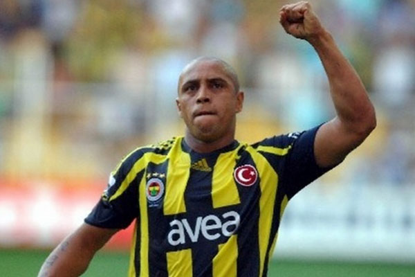
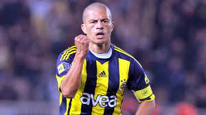

Volkan Demirel profesyonel futbolculuk kariyerine 2000 yılında Kartalspor'da başladı. 2002 yılında Fenerbahçe'ye transfer oldu.02-03 sezonunda Rüştünün yerine oyuna giren Volkan Demirel ilk kez bu maçta şans bulmuştur.Tartışmasız bir şekilde Fenerin efsane kalecisidir.

Brezilyalı solbek.96-97 yılları arasında İnterden Real Madride transfer olan dünya yıldızı solbek Real Madridde yıldızlaşmaya ve Madridin vazgeçilmezi olmayı başarmıştır. 07-08 sezonunda FENERBAHÇEMİZE transfer olmuştur.Sadece 2 yıl olsa da takımına gerçekten önemli başarılar ve katkı sağlamıştır.Açık ara süperlige gelmiş geçmiş en büyük transferi ve FENERBAHÇEMİZİN EFSANESİDİR.

Alex de Souza, imzayı attıktan sonra antrenmanlara başlasa bile takımının ilk hafta oynadığı Çaykur Rizespor maçına yetişemedi. 2-2 biten maçta kadroda değildi. Ligin ikinci haftasında Samsunspor ile oynanan maçta ilk 11'de sahaya çıktı. 52. dakikada Fábio Luciano'ya gol pasını verdi ve Fenerbahçe'deki ilk asistini yaptı. Fenerbahçe bu maçı 2-1 kazandı ve 2004 - 2005 sezonunda ilk üç puanını aldı. Bir hafta sonra deplasmanda oynanan İstanbulspor maçına da ilk 11 çıkan Alex de Souza, bu maçta 50. dakika da Tuncay Şanlı'ya gol pasını verdi ve ikinci maçında ikinci asistini yaptı. Dakika 89'da ise Fenerbahçe adına ilk golünü kaydetti. Alex de Souza ligde toplam 31 maça çıktı, 2725 dakika süre aldı. 24 gol attı ve 16 asistle 2004-2005 sezonunda asist kralı oldu.Takımı 2004-2005 sezonunda lig şampiyonluğuna ulaştı.UEFA Şampiyonlar Ligi'nde takımı Sparta Praha, Olympique Lyonnais ve Manchester United ile aynı grupta oynadı. Alex, Şampiyonlar Ligi'nde 6 maçta toplam da 538 dakika oynayıp 1 asist yaptı. Alex de Souza Türkiye Kupası'nda ise 5 maça çıkmış, 3 gol atmıştır. Sezon genelinde 44 maça çıkmış, 28 gol, 17 asist yapmış 3884 dakika sahada kalmıştır.